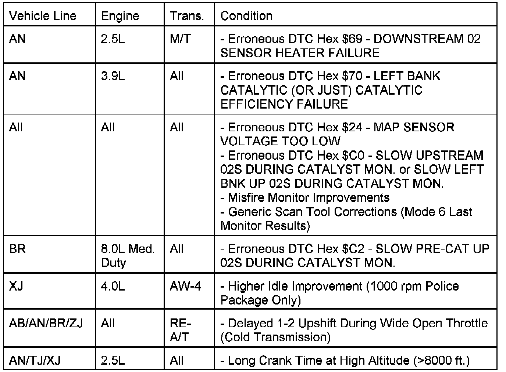
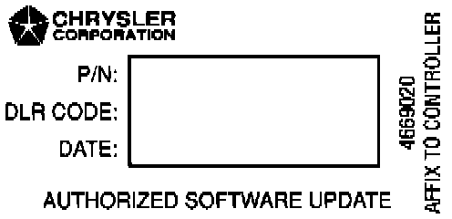
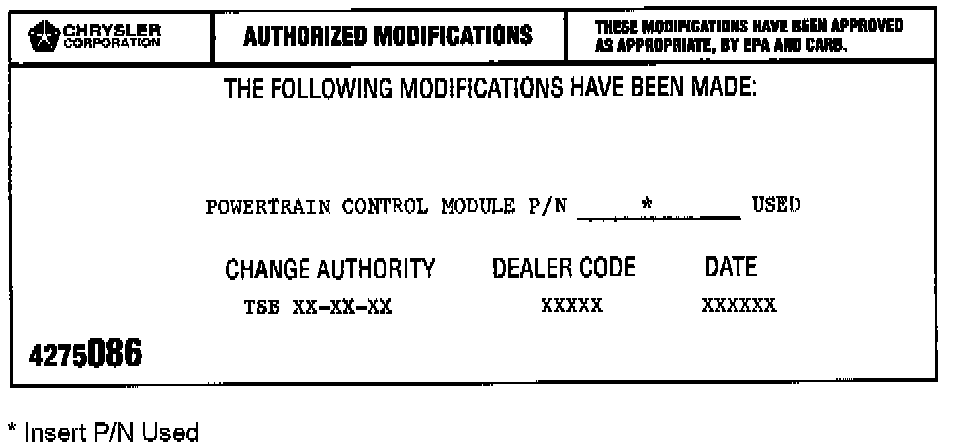

PCM - Erroneous MIL ON/Driveability Improvements
NO: 18-12-97GROUP: Vehicle Performance
DATE: Mar. 14, 1997
SUBJECT:
Erroneous MIL Illumination/Driveability Improvements
MODELS:
1997 (AB) Ram Van/Wagon
1997 (AN) Dakota
1997 (BR) Ram Truck
1997 (TJ) Wrangler
1997 (XJ) Cherokee
1997 (ZJ) Grand Cherokee

SYMPTOM/CONDITION:
NOTE:
THIS FLASH UPDATE DOES NOT APPLY TO WRANGLER MODELS BUILT PRIOR TO JULY 15, 1996 (MDH 01-15-XX) 8 DIGIT PCM PART NUMBER. APPLICABLE MODELS CAN BE IDENTIFIED WITH A 10 DIGIT PCM PART NUMBER.
DIAGNOSIS:
Using the Mopar Diagnostic System (MDS) or the Diagnostic Scan Tool (DRB III) with the appropriate Diagnostic Procedures Manual, verify all engine/transmission systems are functioning as designed. If Diagnostic Trouble Codes (DTC's) are present, record them on the repair order and repair as necessary before proceeding further with this bulletin. If no DTC's or those listed above are present and any of the above symptoms have been experienced, perform the Repair Procedure.
NOTE:
WHENEVER A POWERTRAIN CONTROL MODULE (PCM) IS REPLACED DUE TO FAILURE, THE SOFTWARE OF THE REPLACEMENT PCM SHOULD BE VERIFIED FOR THE LATEST REVISION LEVEL.
EQUIPMENT REQUIRED:
All Symptoms (Flash Programming)
1 CH6000 Scan Tool (DRB III)
1 CH7035 General Purpose Interface Bus Cable (GPIB)
1 CH7000/7001 J1962 Cable
1 4669020 Label - Authorized Software Update
1 4275086 Label - Authorized Modification
NOTE:
THE MDS AND DRB III ARE REQUIRED TO PERFORM THIS REPAIR AND THE SYSTEM MUST BE OPERATING WITH RELEASE 21 OR HIGHER AND TIL CD RELEASE 1127 OR HIGHER MUST BE INSTALLED.
REPAIR PROCEDURE:
This repair involves selectively erasing and reprogramming the Powertrain Control Module (PCM) with new software (calibration changes) for all conditions listed.
1. Connect the MDS (Mopar Diagnostic System) and DRB III (Scan Tool) to the vehicle and power them up.
2. Use the arrow keys and select # 2 MDS DIAGNOSTICS on the DRB III MAIN MENU Screen.
3. Use the arrow keys and select DIAGNOSTIC MENU on the MDS, then press NEXT MENU.

4. Use the arrow keys and select VEHICLE CONTROLLER PROGRAMMING on the MDS, then press NEXT MENU.
5. Use the arrow keys and select PROGRAMMING OF ALL OTHER CONTROLLERS USING MDS & DRB III on the MDS, then press NEXT MENU.
6. Follow the steps presented on the MDS and DRB III which will allow the DRB III to obtain the current part number of the PCM.
7. The MDS will display the part number of the PCM on the vehicle and the appropriate replacement part number, then press NEXT MENU to begin programming.
If the PCM on the vehicle has already been updated or programmed, a NO UPDATES AVAILABLE message will be displayed. Check the part number of the PCM on the vehicle and compare it to the part number displayed. If the PCM has already been updated, then another condition exists that will require further diagnosis and repair.
8. The MDS and DRB III will prompt for any operator action needed during the remainder of the programming process.
NOTE:
THE FOLLOWING STEPS ARE REQUIRED BY LAW.
9. Type the necessary information on the "Authorized Software Update Label" p/n 04669020. Attach the label to the PCM and cover the label with the clear plastic overlay.

10. Type the necessary information on the Authorized Modification Label p/n 04275086. Attach the label near the VECI Label.
POLICY: Reimbursable within the provisions of the warranty.
TIME ALLOWANCE:
Labor Operation No: 08-19-47-97 0.5 Hrs.
FAILURE CODE: FM - Flash Module